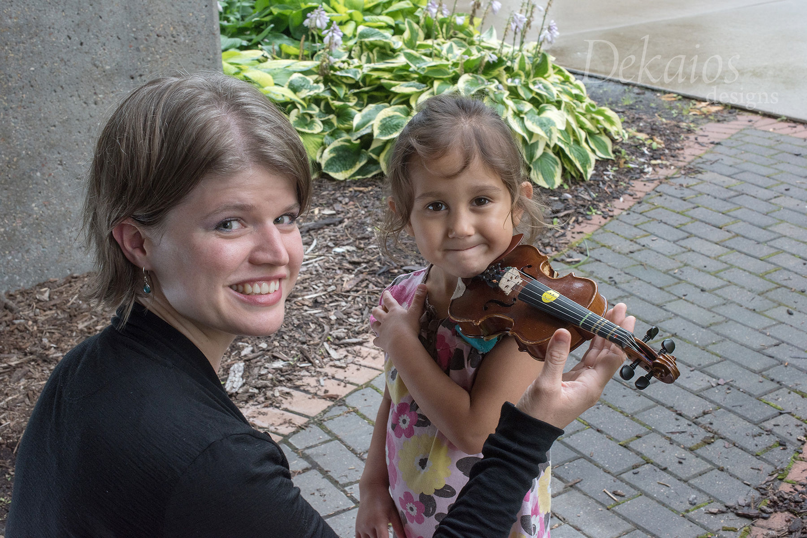

“Kathleen has been an amazing violin teacher to both of our kids for many years and is a great role model to
them! She’s a talented violinist and the kids look up to her to do better. She’s fun, approachable, attentive,
and tries different ideas and styles to facilitate their learning. We love Kathleen.”
~ Rawan A.
“Ms. Kathleen has helped me grow as a violinist the most by simplifying difficult pieces in a way I understand
the best. She’s patient, kind and fun.”
~ Dania (middle school student)
“Kathleen is a very talented violinist. Most importantly, she is a very talented violin teacher. I like her
teaching style very much, encouraging but also strict. She knows how to encourage students to practice hard to
reach a higher level; she knows how to instruct students to improve their violin techniques, and gives them the
easiest and most effective ways to practice challenging technical skills. My son has studied violin with
Kathleen for 4 years now, and I can see his steady progress every year. We are so happy to have Kathleen as his
violin teacher.”
~ Runqing H.
“My daughter studied violin with Kathleen from age 3. Without reservation, the foundational years we spent in
her studio contributed in large part to the young artist she is today. Kathleen approaches students with
kindness, patience, a grounding in the Suzuki method, and with a keen interest in their development as whole
persons.”
~ Alan D
“Kathleen is kind, patient and professional with both children and adults. I highly recommend her for a teacher.
You won’t find a more knowledgeable or enjoyable teacher. Both my daughter and I have taken lessons from her.”
~ Valerie W.
“Ms. Kathleen has allowed me to get better at playing the violin in so many ways. She has allowed me to take my
music level to all new heights with dynamics, bow techniques, playing styles, and much more.”
~ Jude (highschool student)